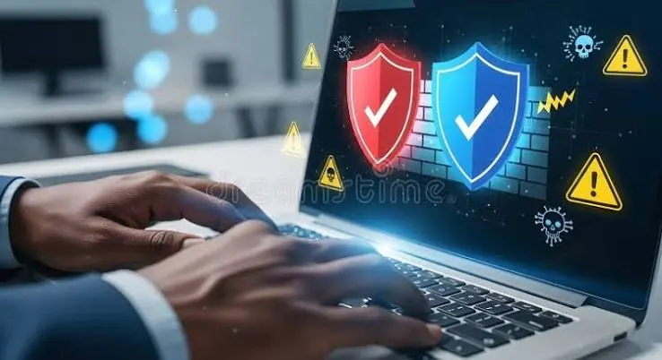

Laptops
How to Protect Your Laptop from Viruses and Malware: A Practical Guide
Protect your laptop from viruses, ransomware and other malware with practical habits for updates, downloads, passwords, backups and safe browsing.
Introduction: Everyday Habits Are Your First Line of Defence
Laptops hold important information such as personal files, work files, pictures, passwords and online accounts. This can be vulnerable to malware. It can cause problems like slowing down your computer, displaying adverts, stealing your credentials, or encrypting files for a ransom. There are many ways that your laptop can become infected.
You cannot guarantee that a single security tool will stop all attacks. By using supported software, secure account settings, careful web browsing, regular backups and being aware of any suspicious activity you can increase the security of your laptop. The steps below are good steps to take from home users, students and small businesses.

1. Keep your Operating System updated
Many updates for your operating system will include security patches. Make sure that you turn on automatic updates where possible. Install any important security updates as soon as possible, and restart your laptop where required so that the updates can be completed properly.
Ensure that your OS is still supported by the developer. If it isn’t getting security updates it will be more difficult to keep secure. If you cannot run a supported version consider upgrading your OS or replacing the device instead of relying on Anti-Virus.
2. Use trusted security software
Use the built-in security tools of a supported OS or use a reputable security tool from a known provider. Turn on real-time protection and automatic updates. Run a scan if you notice any unusual activity or if a security alert suggests you should.
Avoid using multiple real-time anti-virus tools unless they are explicitly supported by their providers. This can cause conflicts, slow your laptop and cause confusing alerts. Do not trust pop-ups stating that your computer has a virus and asking you to call an unknown number.
3. Download from trusted sources
Download any applications from the official developers site, a recognised app store or an organisation approved software portal. Be very careful with the spelling of the sites. Some sites will mimic popular applications and include installers with unwanted/malware.
Avoid using pirated software, crack tools and keygens. These are a common way of distributing malware. They can also expose yourself to legal and reliability issues. Ensure that any applications you are installing are actually required and can be traced back to the publisher.
4. Be wary of email attachments/links
Unusual invoices, delivery notifications, job offers and account warnings can be used to trick you into opening malicious attachments or fake login pages. Check that the full email address is correct and consider whether you would expect to receive this email. Be wary of any urgent language, unexpected payment requests and files that ask you to enable macros or change security settings.
If this email looks like it is coming from your bank, employer or service provider go to the organisations website directly or contact them through a known method. Do not enter any passwords or payment details.
5. Use strong unique passwords and Multi-Factor Authentication
If someone steals your password they can access your email, cloud storage, social media and many other services. Use a unique password for any important accounts. Use a reputable password manager to create and store complex passwords.
Turn on Multi-Factor Authentication (MFA) for your email, financial accounts, cloud and work systems. This can help protect you further if your password is exposed. Use an MFA app, security key or other supported method. Never share one-time verification codes.
6. Turn on your Firewall
This will help control what traffic is going through your device. If you have a firewall built into your OS ensure that it is turned on. If you have another supported solution set up by an authorised IT admin then ensure that is turned on. Be cautious when allowing unknown applications to use the network.
Don’t turn off your firewall due to connection errors from an application. Ensure that the software is legitimate and refer to the official guidance. If you are in a workplace environment speak to IT before making any changes.
7. Keep your home and public Wi-Fi secure
Ensure that your home router has a strong admin password and modern Wi-Fi security. Change any default passwords and update any firmware through the official manufacturers website. If possible use a guest network for visitors.
While public Wi-Fi can be convenient, avoid doing anything sensitive. Ensure that any websites have secure connections. If required use an organisation approved Virtual Private Network (VPN). A VPN won’t make all websites secure, so be cautious of any suspicious links/downloads.
8. Regularly backup your important files
Keeping regular backups can help you if you fall victim to ransomware, hardware failure, accidental deletion or theft. Use an approved cloud backup, external drive or a mix. If possible use at least one external backup to give you extra protection. Once the backup has completed disconnect it.
Ensure that your backups are working and try restoring a few files. Not all synchronisation is backup, if something malicious or accidental is synchronised it could impact your other copies. If you are in a workplace environment follow your backup guidelines for company data. Don’t transfer any confidential files to unapproved services.
9. Be cautious of USBs and external devices
Unknown USBs can contain malicious files or devices to exploit your computer. Don’t plug in any USBs found in public places or from an untrusted source. Scan any removable media with a reputable security tool. Only open files that you expect.
Ensure that your external devices are kept secure. Where possible use encryption. If you are using a USB for backups disconnect once your backup has completed. If you are in an office environment follow your IT policies.
10. Use a standard user account
Using an admin account can allow changes across the whole system, installing software and making changes to important settings. Using a standard user account can reduce the damage caused by some malicious applications. Keep an admin account for authorised installations.
Don’t allow unexpected permission requests. If a programme is requesting admin rights ensure that it is from a trusted source and that it needs it. If you are in a managed environment let your IT admin handle your account permissions.
11. Know the signs of malware
Some signs that your device may have malware are unexpected pop-ups, unknown extensions, unexpected logins to your account, unusual network activity, disabled security tools, unknown applications and sudden changes in performance. This doesn’t necessarily mean that you have malware, it could be due to a faulty drive, unwanted software or a genuine background process.
If you suspect that you have an infection follow any guidance from your security provider/IT team to disconnect from networks. Don’t enter any passwords on the device. Run a scan using trusted security tools. If it is a work laptop contact your IT as soon as possible. Don’t attempt to clean it up too much as this may destroy evidence.
12. What to do if you suspect an infection
If your security tool has detected any malware follow the guidance to either isolate or remove it. Update your security tools and run a full scan. If you think that your passwords may have been stolen change them on a separate trusted device. Turn on Multi-Factor Authentication and check your account logins.
If you have ransomware don’t panic and pay the ransom or download random decryptors. Isolate the device from networks and contact a qualified security professional or your organisations IT team. Keep your backups safe and follow your incident response plan. Depending on the type of malware and quality of your backups you may have options to recover.
Conclusion
Keeping your laptop secure from viruses and malware should be a habit. Keep your supported software updated, use reputable security tools, be cautious when downloading applications and be wary of unexpected messages. Keep your accounts secure with unique passwords and Multi-Factor Authentication, keep your networks secure and ensure that you have working backups. If you suspect a serious infection contact a trusted source as soon as possible. Don’t do anything that could make it harder to recover..
Need a hand with your printer or laptop?
Printerworld sells printers, laptops and genuine supplies, and repairs and services both. Bring in your model number and we will help you get it right.